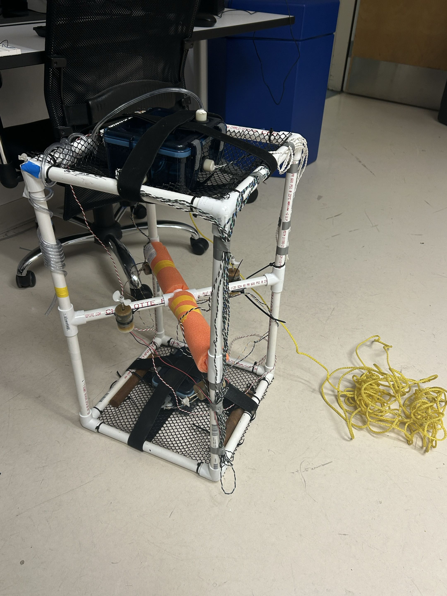
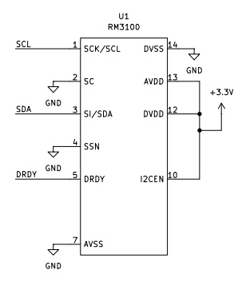
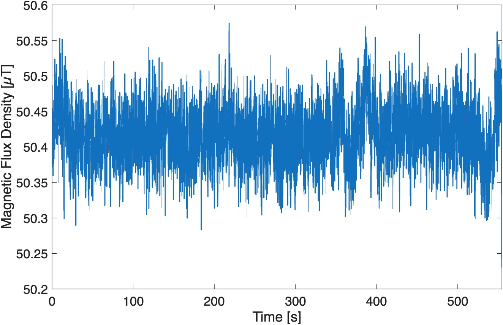
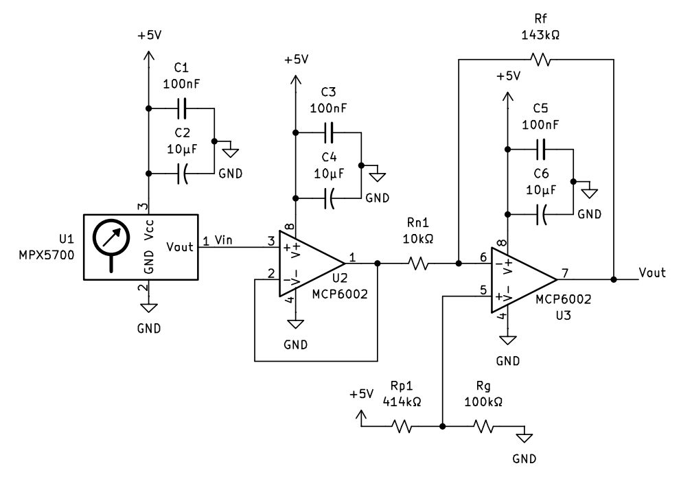
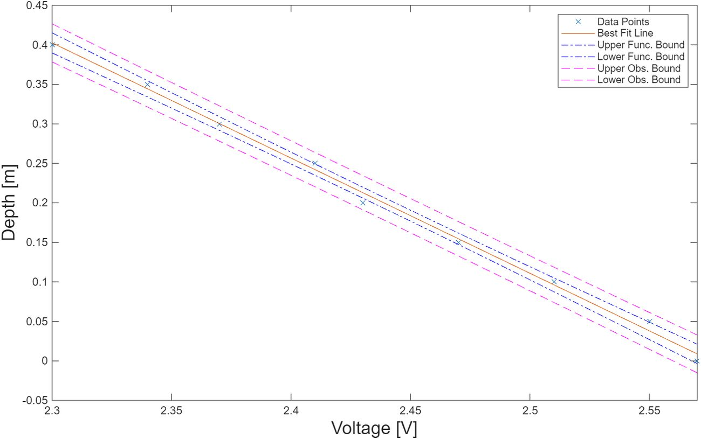
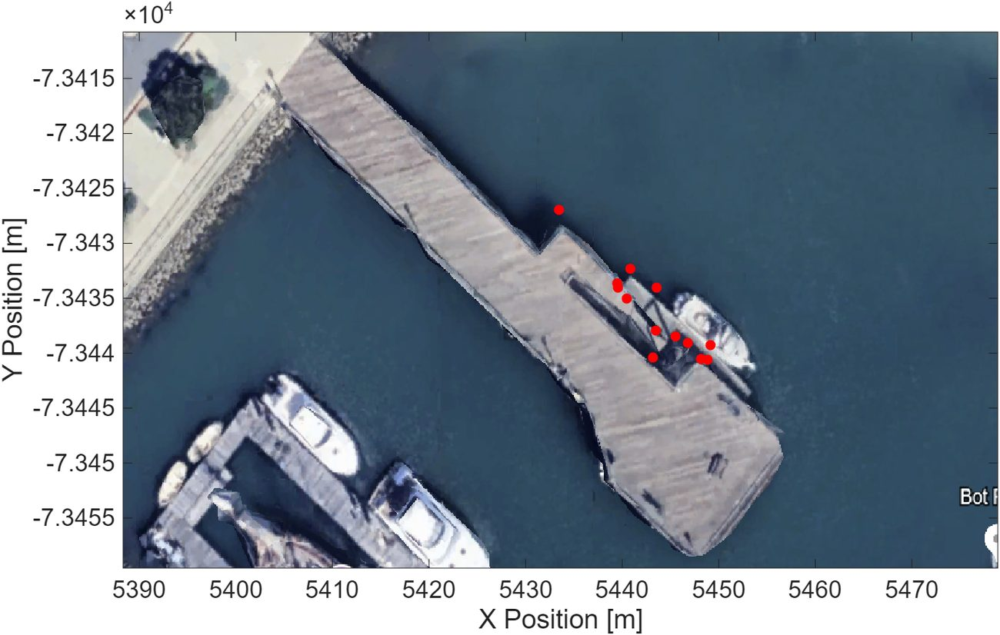
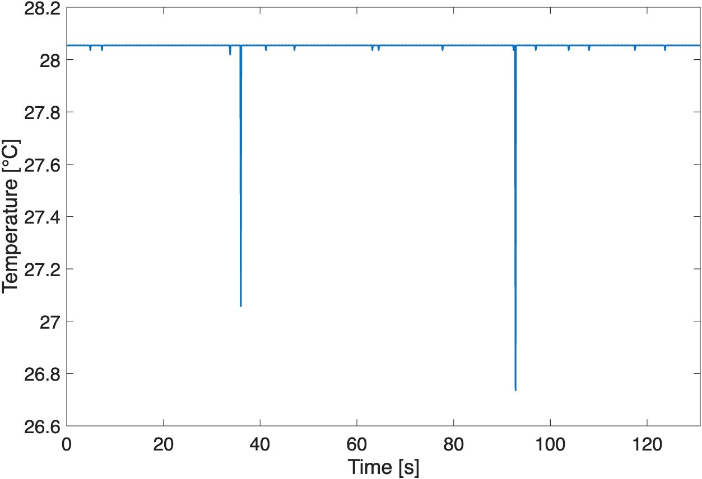
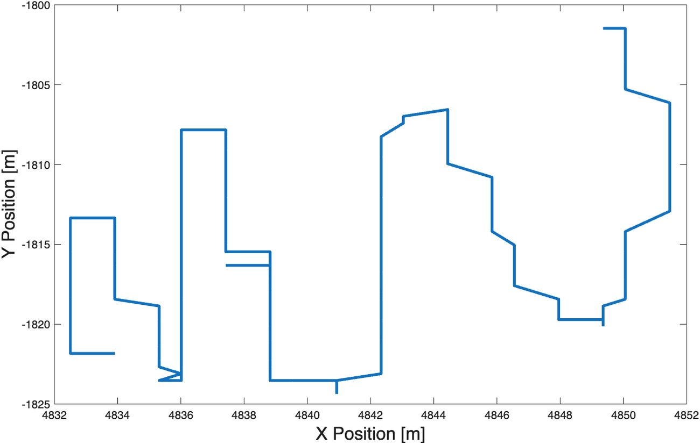
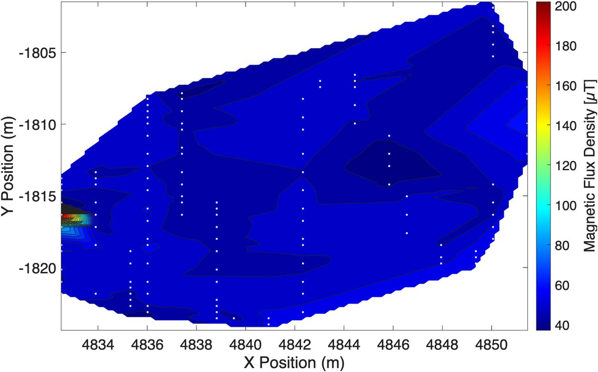

Autonomous Underwater Vehicle

This autonomous underwater vehicle (AUV) was the final project of Experimental Engineering at Harvey Mudd College. This AUV implemented three sensors into the robot design: a thermistor to measure temperature, a pressure sensor to measure depth, and a magnetometer to measure magnetic flux density. The data collected from these sensors was intended to be used to plot a contour plot locating ferromagnetic objects based on position and a 3D plot mapping ocean currents based on geostrophic flow to determine the source of the detected ferromagnetic objects. The malfunction of the thermistor and failure of the magnetometer due to electromagnetic interference caused by the saltwater ultimately led to inconclusive results. However, with dry testing indicating the feasibility of locating ferromagnetic objects based on positioning, the goal of locating ferromagnetic objects in the ocean is practical. On land, baseline magnetic flux readings around 50.4μT, with peaks around magnets ranging between 85μT all the way to 180μT indicated viable readings for the positions of magnets.
Background
Pollution and sea wreckage increasingly accumulate on the ocean floor, posing a significant threat to the environment. Metallic debris–such as shipwrecks and metal scraps–are particularly difficult to locate as well as expensive to remove. Additionally, these materials can induce heavy metal contamination which further threaten the aquatic ecosystem. This experiment aims to tackle this issue by creating an autonomous underwater vehicle (AUV) that can measure pressure, temperature, and magnetic flux. The data gathered can be used to generate contour maps to locate ferromagnetic objects–objects made of materials that exhibit strong magnetism and high magnetic permability–on the ocean floor through magnetic flux and GPS position readings–where metal objects would be located at the peaks of the contour plot.
Ocean currents are driven by winds at the ocean’s surface, variations in water density–caused by temperature and salinity differences–and the Coriolis Effect, which causes currents to curve due to Earth’s rotation. Since another focus of this project is to track the path of debris, determining geostrophic flow, the product of these factors, allows the large-scale currents created to be studied. Therefore, the pressure and temperature sensors could be used to map geostrophic flow through a 3D plot of the currents to track the path of the debris and identify sources of pollution.
Sensor Design
The sensors chosen for the AUV were a pressure sensor, thermistor, and magnetometer. Each sensor needed its own circuit to turn what it measures into a voltage range the Teensy microcontroller can read.
Magnetometer
The magnetometer locates ferromagnetic objects underwater–given the AUV operates using an accurate GPS–allowing it to map magnetic flux density to position. Essentially, the magnetometer gives a magnetic flux reading at each data point collection. Then, by mapping out these magnetic flux values in MATLAB and interpolating the points in between, the peaks on the contour plot indicate the locations of the ferromagnetic objects. The particular sensor used was the RM3100, which was chosen due to its ability to pick up fairly weak magnetic fields while still having manageable levels of noise. According to the RM3100 magnetometer datasheet, it can take up to a +3.7V input, so a +3.3V regulator was implemented to regulate the supplied voltage input. Its expected range of values read are between ±800μT in the x-, y-, and z-directions, which gives a 0 to 1385μT range for overall magnitude. This is then output to the Teensy through three wires–SCL, SDA, and DRDY. This sensor was calibrated by placing it stationary for 10 minutes outside with minmal magnetic interference. As seen below, the baseline magnetic flux density output hovered around 50.4μT, falling within the range of expected magnetic flux (40μT-60μT due to Earth's magnetic flux), indicating the magnetometer was working properly.


The pressure sensor and thermistor can be used to find the depth of the AUV and the temperature at those varying depths. Assuming that salinity is constant—which is reasonable because measurements were taken within 20 m of each other and therefore should not have significant variance in salinity [7]—the temperature at varying depths can be used to solve for the geostrophic flow using the equations:
$$ u = -\frac{1}{f\rho_0}\frac{\partial P}{\partial y} \tag{1} $$ $$ v = \frac{1}{f\rho_0}\frac{\partial P}{\partial x} \tag{2} $$where \(u\) and \(v\) from Equations 1 and 2 are the current velocities along the x- and y-axis respectively, \(f\) is the Coriolis parameter, \(\rho_0\) is the seawater density, and \(P\) is the pressure [3]. To find the density of the seawater, we can use the mathematical expression adopted by the UNESCO Joint Panel where:
$$ \rho(S,t,p) = \frac{\rho(S,t,0)}{1 - \dfrac{p}{K(S,t,p)}} \tag{3} $$where \(S\) is the salinity, \(t\) is the temperature in Celsius, and \(p\) is the applied pressure in bars. Therefore, assuming salinity is constant, if the AUV collects temperature and pressure, the density differences can be calculated to solve for the geostrophic flow. To create circuits that collect temperature and depth, the sensors need to take a power source of 5 V and transform it to a range of 0 V to 3.3 V so that it falls within a range that the Teensy can read.
Pressure Sensor
The pressure sensor input values are solved using the equation from the MPX5700 datasheet [8]:
$$ V_{\text{pressure}} = V_S\,(0.0012858\,P + 0.04) \tag{4} $$where \(V_S\) is the supply voltage 5 V, and \(P\) is the pressure in kPa given by the equation:
$$ P = P_0 + \rho g h \tag{5} $$where \(P_0\) is the pressure at sea level, \(\rho\) is the density of the water, \(g\) is gravity, and \(h\) is the depth in meters. The AUV is expected to traverse depths from 0 m to 3 m. The parameters are plugged in where \(P_0 = 97.21\,\text{kPa}\)—measured in the lab during calibration testing, \(\rho = 1000\,\text{kg/m}^3\), and \(g = 9.81\,\text{m/s}^2\). Using the expected range of 0 m to 3 m for \(h\), the input voltages of the pressure sensor are solved to be a minimum of 0.85142 V to a maximum of 1.0406 V, resulting in a range of 0.18918 V. However, this range needs to be scaled to a readable output for the Teensy, which can be done by amplifying and shifting the range using op-amps. Since the Teensy expects values between 0.3 V and 3 V (allowing for a 0.3 V margin of error), the input range of 0.18918 V needs to be scaled up to 2.7 V, giving a gain of around 14.3, which can be substituted into the offset amplifier equation:
$$ \begin{aligned} V_{\text{out}} &= \left(1 + \frac{R_f}{R_{n1}}\right)V_+ - \frac{R_f}{R_{n1}}\,V_{\text{in}} \\ &= (1 + 14.3)\,V_+ - 14.3\,V_{\text{in}} \end{aligned} \tag{6} $$where substituting in the expected Teensy readings for \(V_{\text{out}}\) and the input voltage values for \(V_{\text{in}}\), \(V_+\) can be solved to fall between 0.96712 V and 0.96749 V. This also gives the selected resistance values of \(R_{n1} = 10\,\text{k}\Omega\) and \(R_f = 143\,\text{k}\Omega\). This range can then be used to solve for the resistor values that provide the offset to get the voltage readings in the Teensy range:
$$ \begin{aligned} V_+ &= \frac{R_g}{R_{p1} + R_g}\,V_{p1} \\ &= \frac{R_g}{R_{p1} + R_g}\,(5) \end{aligned} \tag{7} $$By substituting \(V_+\) into the equations, it gives resistor ratios between 1:4.16801 and 1:4.16998, where measured resistors \(R_g = 100\,\text{k}\Omega\) and \(R_{p1} = 414\,\text{k}\Omega\) were chosen, giving the schematic below.


Thermistor
The thermistor uses a voltage divider followed by a second offset amplifier, with a gain of about 3, to cover an expected ocean range of 10–25 °C. It was calibrated by fitting the Steinhart-Hart equation to measured resistances in MATLAB.
Robot Design
The frame is 35.5 × 35.5 × 63.5 cm. The magnetometer sits at the very bottom, as close to the floor as possible and far from the ballast, while most of the ballast and all the main electronics live in a box at the top, which is also the part that breaks the surface for GPS. Four motors drive it: two pointing up and down for diving, and two on opposite sides for steering on the surface.
The robot was balanced to be nearly neutrally buoyant, so it needed very little thrust to dive. Its center of mass sits above its center of buoyancy, but because the center of mass is below the metacenter the design stays stable when it tilts.
Deployment
The AUV was deployed from the pier at Dana Point. Surface steering turned out to be unreliable because yaw calculations only worked in one orientation, and GPS resolution was too coarse for a grid pattern, so positions were recorded by dropping the robot at marked spots along the pier and logging each one with a phone’s GPS. In the water, a P-controller held the robot at depth steps of 0.5 m while data was logged to an SD card.


Results
The pressure sensor was the most reliable: in every trial the robot stopped at the expected depth increments and stayed within 0 to 3 m. The other two sensors ran into trouble in the water.
The Thermistor
Its readings railed out near 28 °C while a digital thermometer measured 18.7 °C at the surface. Testing narrowed the cause to a likely short along the sensor wire, so the temperature data was not usable.

The Magnetometer
It read well in air and in fresh water, but in salt water the readings spiked and then flatlined. The leading hypothesis is that electromagnetic interference was amplified underwater.
Testing the Method on Land
To check that the approach itself works, magnets were scattered on the floor and the robot was carried over the area in a grid pattern. The resulting contour map shows a clear peak where a magnet sits, with baseline readings near 50.4 μT and peaks from about 85 μT up to 180 μT. It picked up one of the four magnets, so the method is feasible but needs better detection.


What Comes Next
- Minimize electromagnetic interference and waterproof the sensors more carefully so no wires short.
- Use two magnetometers with sensor fusion for more reliable readings.
- Collect more points at a constant speed with more accurate GPS for better interpolation.
My Contributions
- Designed and integrated multi-sensor circuitry for the AUV.
- Interfaced six sensor systems (GPS, IMU, pressure, temperature, motor current and magnetometer) with the microcontroller for onboard data acquisition.
- Wrote MATLAB code to analyze sensor data for water-current mapping and magnetic-object detection.